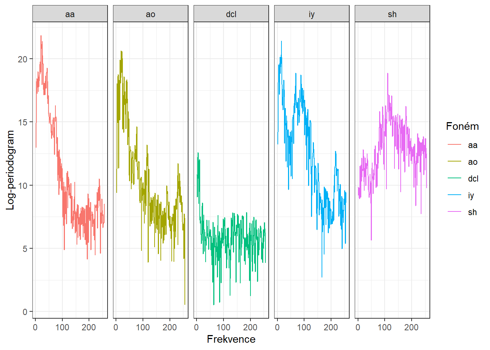
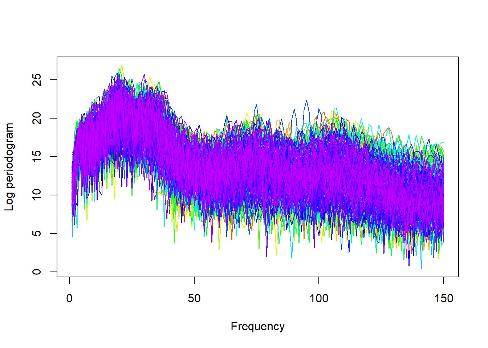
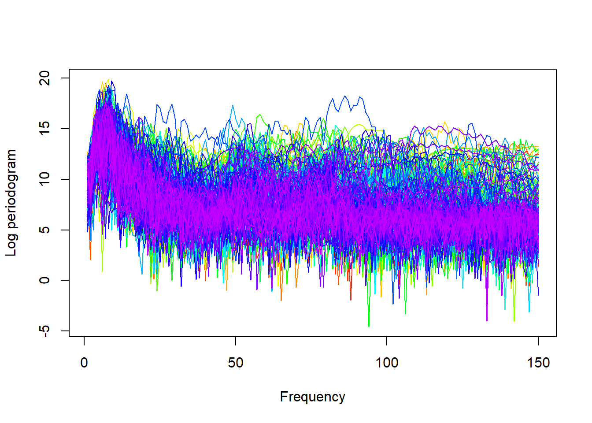
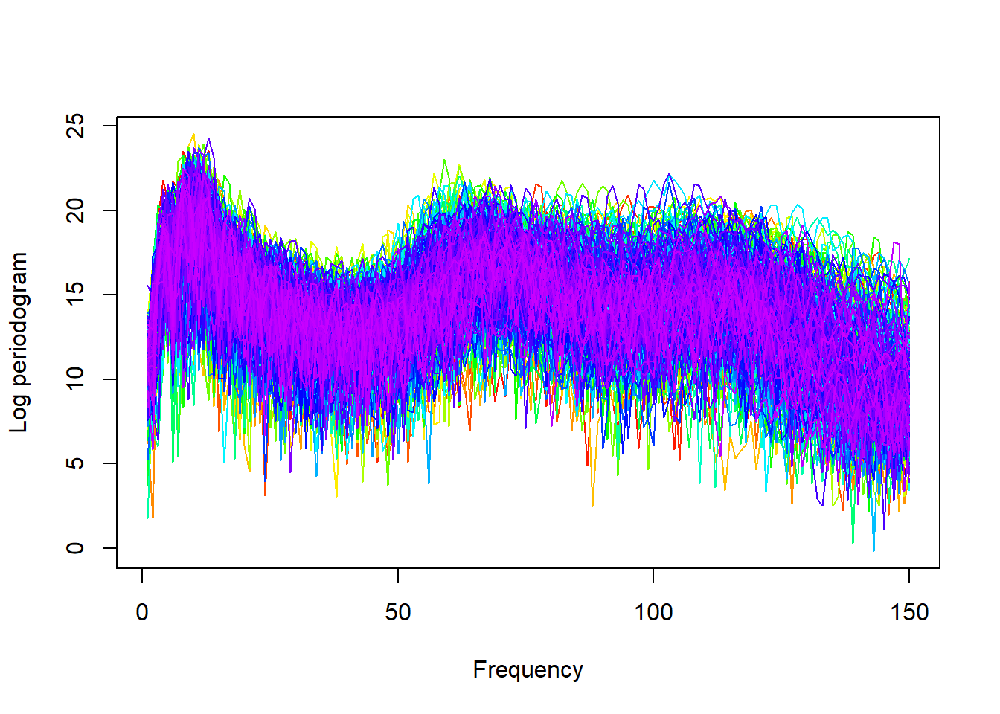
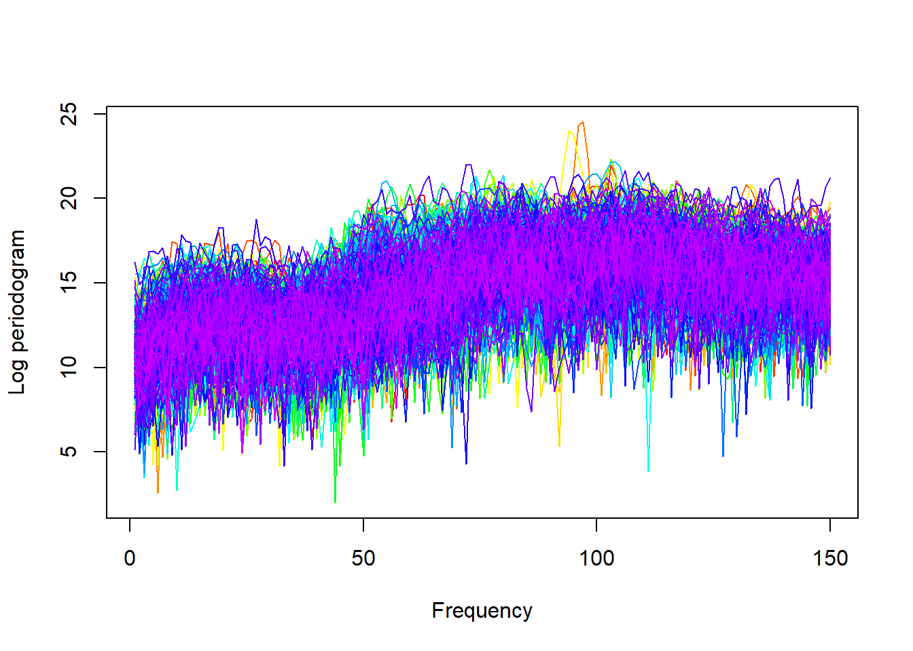
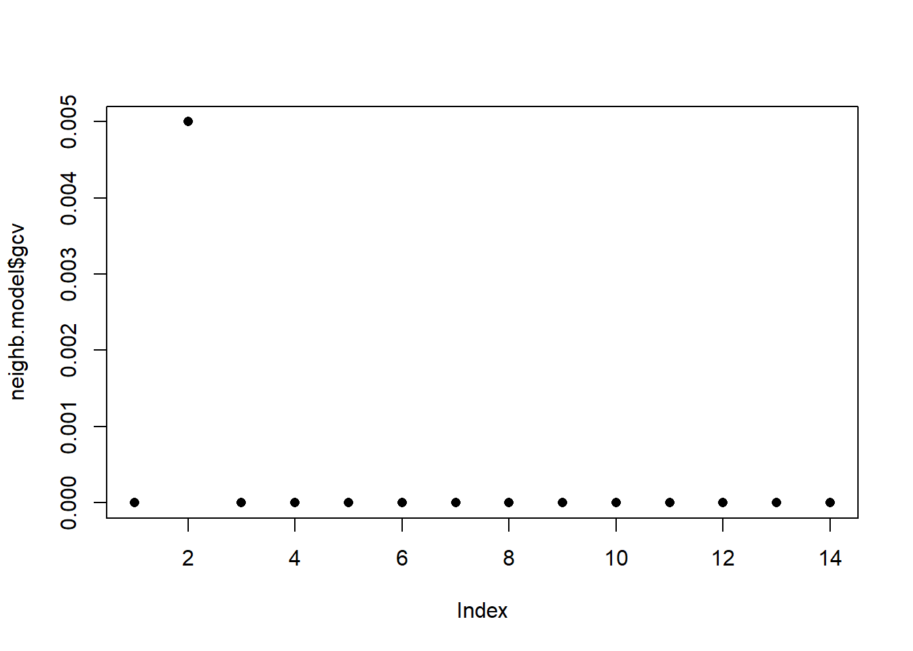

Kapitola 10 Aplikace na reálných datech 2
Ve druhé části tohoto dokumentu se budeme zabývat aplikací dříve popsaných metod (pro více podrobností viz například sekci 1) na reálná data. Budeme pracovat s daty growth, která jsou dostupná v knihovně fda. Jedná se o datový soubor obsahující růstové křivky 39 chlapců a 54 děvčat, přičemž subjekty sledujeme v intervalu jednoho až 18. roku života, a to v celkem 31 časových bodech. Naší úlohou bude klasifikovat růstové křivky podle pohlaví, tedy bude nás zajímat predikce pro novou růstovou křivku, zda se jedná o chlapce, či dívku.
Code
# nacteme potrebne balicky
library(fda)
library(ggplot2)
library(dplyr)
library(tidyr)
library(ddalpha)
library(tidyverse)
set.seed(42)
# nacteni dat
data <- read.delim2('phoneme.txt', header = T, sep = ',')
data <- data |>
mutate(g = factor(g),
speaker = factor(speaker))
data[, 2:257] <- as.numeric(data[, 2:257] |> as.matrix())## g speaker
## aa : 695 test.dr2.mdbb0.sa1 : 12
## ao :1022 test.dr5.msfh1.sa1 : 12
## dcl: 757 test.dr6.mcmj0.sa1 : 12
## iy :1163 test.dr7.mers0.sa1 : 12
## sh : 872 train.dr1.mrcg0.sa1: 12
## train.dr2.mdem0.sa1: 12
## (Other) :4437Code
## test train
## 1169 3340Code
n_plot <- 5
data[c(1, 2, 3, 5, 9), ] |>
pivot_longer(cols = x.1:x.256, names_to = 'time',
values_to = 'value') |>
mutate(time = rep(1:256, n_plot)) |>
ggplot(aes(x = time, y = value, colour = g, group = interaction(speaker, g))) +
geom_line() +
theme_bw() +
facet_grid(~ g) +
labs(x = 'Frekvence',
y = 'Log-periodogram',
colour = 'Foném')





Code
n_train <- 200
n_test <- 200
phoneme_subset <- c('ao', 'iy')
data_train <- data |> filter(train) |> filter(g %in% phoneme_subset)
data_test <- data |> filter(!train) |> filter(g %in% phoneme_subset)
data_train <- data_train[sample(1:dim(data_train)[1], n_train), ]
data_test <- data_test[sample(1:dim(data_test)[1], n_test), ]
X_train <- data_train[, -c(1, 258, 259, 260)] |> t()
X_test <- data_test[, -c(1, 258, 259, 260)] |> t()
rownames(X_train) <- 1:256
colnames(X_train) <- paste0('train', colnames(X_train))
rownames(X_test) <- 1:256
colnames(X_test) <- paste0('test', colnames(X_test))
y_train <- data_train[, 258] |> factor(levels = phoneme_subset)
y_test <- data_test[, 258] |> factor(levels = phoneme_subset)
table(y_train)## y_train
## ao iy
## 98 102## y_test
## ao iy
## 105 9510.1 Vyhlazení pozorovaných křivek
Nyní převedeme pozorované diskrétní hodnoty (vektory hodnot) na funkcionální objekty, se kterými budeme následně pracovat. Jelikož se nejedná o periodické křivky, využijeme k vyhlazení B-sline bázi.
Za uzly bereme celý vektor time, standardně uvažujeme kubické spliny, proto volíme (implicitní volba v R) norder = 4.
Budeme penalizovat druhou derivaci funkcí.
Code
Najdeme vhodnou hodnotu vyhlazovacího parametru \(\lambda > 0\) pomocí \(GCV(\lambda)\), tedy pomocí zobecněné cross–validace. Hodnotu \(\lambda\) budeme uvažovat pro obě klasifikační skupiny stejnou, neboť pro testovací pozorování bychom dopředu nevěděli, kterou hodnotu \(\lambda\), v případě rozdílné volby pro každou třídu, máme volit.
Code
# spojeni pozorovani do jedne matice
XX <- cbind(X_train, X_test) |> as.matrix()
lambda.vect <- 10^seq(from = 1, to = 3, length.out = 25) # vektor lambd
gcv <- rep(NA, length = length(lambda.vect)) # prazdny vektor pro ulozebi GCV
for(index in 1:length(lambda.vect)) {
curv.Fdpar <- fdPar(bbasis, curv.Lfd, lambda.vect[index])
BSmooth <- smooth.basis(t, XX, curv.Fdpar) # vyhlazeni
gcv[index] <- mean(BSmooth$gcv) # prumer pres vsechny pozorovane krivky
}
GCV <- data.frame(
lambda = round(log10(lambda.vect), 3),
GCV = gcv
)
# najdeme hodnotu minima
lambda.opt <- lambda.vect[which.min(gcv)]Pro lepší znázornění si vykreslíme průběh \(GCV(\lambda)\).
Code
GCV |> ggplot(aes(x = lambda, y = GCV)) +
geom_line(linetype = 'dashed', linewidth = 0.8) +
geom_point(size = 2.5) +
theme_bw() +
labs(x = bquote(paste(log[10](lambda), ' ; ',
lambda[optimal] == .(round(lambda.opt, 4)))),
y = expression(GCV(lambda))) +
geom_point(aes(x = log10(lambda.opt), y = min(gcv)), colour = 'red', size = 3)
Obrázek 1.3: Průběh \(GCV(\lambda)\) pro zvolený vektor \(\boldsymbol\lambda\). Na ose \(x\) jsou hodnoty vyneseny v logaritmické škále. Červeně je znázorněna optimální hodnota vyhlazovacího parametru \(\lambda_{optimal}\).
S touto optimální volbou vyhlazovacího parametru \(\lambda\) nyní vyhladíme všechny funkce.
Code
Ještě znázorněme všechny křivky včetně průměru zvlášť pro každou třídu.
Code
n <- n_train + n_test
y <- c(y_train, y_test)
DFsmooth <- data.frame(
t = rep(t, n),
time = factor(rep(1:n, each = length(t))),
Smooth = c(fdobjSmootheval),
Phoneme = y)
DFmean <- data.frame(
t = rep(t, 2),
Mean = c(apply(fdobjSmootheval[ , y == 'ao'], 1, mean),
apply(fdobjSmootheval[ , y == 'iy'], 1, mean)),
Phoneme = factor(rep(c('ao', 'iy'), each = length(t)),
levels = levels(y))
)
DFsmooth |> ggplot(aes(x = t, y = Smooth, color = Phoneme)) +
geom_line(aes(group = time), linewidth = 0.2) +
theme_bw() +
labs(x = 'Time',
y = 'Function',
colour = 'Phoneme') +
scale_colour_discrete(labels = c('ao', 'iy')) +
geom_line(data = DFmean, aes(x = t, y = Mean,
group = Phoneme, colour = Phoneme),
linewidth = 1, linetype = 'solid')
Obrázek 1.5: Vykreslení všech vyhlazených pozorovaných křivek, barevně jsou odlišeny křivky podle příslušnosti do klasifikační třídy. Černou čerchovanou čarou je zakreslen průměr pro každou třídu.
10.2 Klasifikace křivek
Nejprve načteme potřebné knihovny pro klasifikaci.
Code
library(caTools) # pro rozdeleni na testovaci a trenovaci
library(caret) # pro k-fold CV
library(fda.usc) # pro KNN, fLR
library(MASS) # pro LDA
library(fdapace)
library(pracma)
library(refund) # pro LR na skorech
library(nnet) # pro LR na skorech
library(caret)
library(rpart) # stromy
library(rattle) # grafika
library(e1071)
library(randomForest) # nahodny lesCode
Ještě se podíváme na zastoupení jednotlivých skupin v testovací a trénovací části dat.
## Y.train
## FALSE TRUE
## 102 98## Y.test
## FALSE TRUE
## 95 105## Y.train
## FALSE TRUE
## 0.51 0.49## Y.test
## FALSE TRUE
## 0.475 0.52510.2.1 \(K\) nejbližších sousedů
Začněme neparametrickou klasifikační metodou, a to metodou \(K\) nejbližších sousedů.
Nejprve si vytvoříme potřebné objekty tak, abychom s nimi mohli pomocí funkce classif.knn() z knihovny fda.usc dále pracovat.
Nyní můžeme definovat model a podívat se na jeho úspěšnost klasifikace. Poslední otázkou však zůstává, jak volit optimální počet sousedů \(K\). Mohli bychom tento počet volit jako takové \(K\), při kterém nastává minimální chybovost na trénovacích datech. To by ale mohlo vést k přeučení modelu, proto využijeme cross-validaci. Vzhledem k výpočetní náročnosti a rozsahu souboru zvolíme \(k\)-násobnou CV, my zvolíme například hodnotu \(k = {10}\).
Code
## - SUMMARY -
##
## -Probability of correct classification by group (prob.classification):
## y
## 1 2
## 1 1
##
## -Confusion matrix between the theoretical groups (by rows)
## and estimated groups (by column)
##
## 1 2
## 1 102 0
## 2 0 98
##
## -Vector of probability of correct classification
## by number of neighbors (knn):
## 1 2 3 4 5 6 7 8 9 10 11 12 13
## 1.000 0.995 1.000 1.000 1.000 1.000 1.000 1.000 1.000 1.000 1.000 1.000 1.000
## 14
## 1.000
##
## -Optimal number of neighbors: knn.opt= 1
## with highest probability of correct classification max.prob= 1
##
## -Probability of correct classification: 1
## [1] 1## [1] 1Proveďme předchozí postup pro trénovací data, která rozdělíme na \(k\) částí a tedy zopakujeme tuto část kódu \(k\)-krát.
Code
k_cv <- 10 # k-fold CV
neighbours <- c(1:(2 * ceiling(sqrt(length(y.train))))) # pocet sousedu
# rozdelime trenovaci data na k casti
folds <- createMultiFolds(X.train$fdnames$reps, k = k_cv, time = 1)
# prazdna matice, do ktere vlozime jednotlive vysledky
# ve sloupcich budou hodnoty presnosti pro danou cast trenovaci mnoziny
# v radcich budou hodnoty pro danou hodnotu K sousedu
CV.results <- matrix(NA, nrow = length(neighbours), ncol = k_cv)
for (index in 1:k_cv) {
# definujeme danou indexovou mnozinu
fold <- folds[[index]]
x.train.cv <- subset(X.train, c(1:length(X.train$fdnames$reps)) %in% fold) |>
fdata()
y.train.cv <- subset(Y.train, c(1:length(X.train$fdnames$reps)) %in% fold) |>
factor() |> as.numeric()
x.test.cv <- subset(X.train, !c(1:length(X.train$fdnames$reps)) %in% fold) |>
fdata()
y.test.cv <- subset(Y.train, !c(1:length(X.train$fdnames$reps)) %in% fold) |>
factor() |> as.numeric()
# projdeme kazdou cast ... k-krat zopakujeme
for(neighbour in neighbours) {
# model pro konkretni volbu K
neighb.model <- classif.knn(group = y.train.cv,
fdataobj = x.train.cv,
knn = neighbour)
# predikce na validacni casti
model.neighb.predict <- predict(neighb.model,
new.fdataobj = x.test.cv)
# presnost na validacni casti
presnost <- table(y.test.cv, model.neighb.predict) |>
prop.table() |> diag() |> sum()
# presnost vlozime na pozici pro dane K a fold
CV.results[neighbour, index] <- presnost
}
}
# spocitame prumerne presnosti pro jednotliva K pres folds
CV.results <- apply(CV.results, 1, mean)
K.opt <- which.max(CV.results)
presnost.opt.cv <- max(CV.results)
CV.results## [1] 1 1 1 1 1 1 1 1 1 1 1 1 1 1 1 1 1 1 1 1 1 1 1 1 1 1 1 1 1 1Vidíme, že nejlépe vychází hodnota parametru \(K\) jako 1 s hodnotou přesnosti spočtenou pomocí 10-násobné CV 1. Pro přehlednost si ještě vykresleme průběh validační chybovosti v závislosti na počtu sousedů \(K\).
Code
CV.results <- data.frame(K = neighbours, CV = CV.results)
CV.results |> ggplot(aes(x = K, y = 1 - CV)) +
geom_line(linetype = 'dashed', colour = 'grey') +
geom_point(size = 1.5) +
geom_point(aes(x = K.opt, y = 1 - presnost.opt.cv), colour = 'red', size = 2) +
theme_bw() +
labs(x = bquote(paste(K, ' ; ',
K[optimal] == .(K.opt))),
y = 'Validační chybovost') +
scale_x_continuous(breaks = neighbours)Obrázek 1.6: Závislost validační chybovosti na hodnotě \(K\), tedy na počtu sousedů.
Nyní známe optimální hodnotu parametru \(K\) a tudíž můžeme sestavit finální model.
Code
## - SUMMARY -
##
## -Probability of correct classification by group (prob.classification):
## y
## 1 2
## 1 1
##
## -Confusion matrix between the theoretical groups (by rows)
## and estimated groups (by column)
##
## 1 2
## 1 102 0
## 2 0 98
##
## -Vector of probability of correct classification
## by number of neighbors (knn):
## 1
## 1
##
## -Optimal number of neighbors: knn.opt= 1
## with highest probability of correct classification max.prob= 1
##
## -Probability of correct classification: 1Code
## [1] 0Vidíme tedy, že přesnost modelu sestrojeného pomocí metody \(K\) nejbližších sousedů s optimální volbou \(K_{optimal}\) rovnou 1, kterou jsme určili cross-validací, je na trénovacích datech rovna 0 a na testovacích datech 0.
K porovnání jendotlivých modelů můžeme použít oba typy chybovostí, pro přehlednost si je budeme ukládat do tabulky.
10.2.2 Lineární diskriminační analýza
Jako druhou metodu pro sestrojení klasifikátoru budeme uvažovat lineární diskriminační analýzu (LDA). Jelikož tato metoda nelze aplikovat na funkcionální data, musíme je nejprve diskretizovat, což provedeme pomocí funkcionální analýzy hlavních komponent. Klasifikační algoritmus následně provedeme na skórech prvních \(p\) hlavních komponent. Počet komponent \(p\) zvolíme tak, aby prvních \(p\) hlavních komponent dohromady vysvětlovalo alespoň 90 % variability v datech.
Proveďme tedy nejprve funkcionální analýzu hlavních komponent a určeme počet \(p\).
Code
# analyza hlavnich komponent
data.PCA <- pca.fd(X.train, nharm = 10) # nharm - maximalni pocet HK
nharm <- which(cumsum(data.PCA$varprop) >= 0.9)[1] # urceni p
if(nharm == 1) nharm <- 2 # aby bylo mozne vykreslovat grafy,
# potrebujeme alespon 2 HK
data.PCA <- pca.fd(X.train, nharm = nharm)
data.PCA.train <- as.data.frame(data.PCA$scores) # skore prvnich p HK
data.PCA.train$Y <- factor(Y.train) # prislusnost do tridV tomto konkrétním případě jsme za počet hlavních komponent vzali \(p\) = 8, které dohromady vysvětlují 90.07 % variability v datech. První hlavní komponenta potom vysvětluje 35.43 % a druhá 25.57 % variability. Graficky si můžeme zobrazit hodnoty skórů prvních dvou hlavních komponent, barevně odlišených podle příslušnosti do klasifikační třídy.
Code
data.PCA.train |> ggplot(aes(x = V1, y = V2, colour = Y)) +
geom_point(size = 1.5) +
labs(x = paste('1. hlavní komponenta (vysvětlená variabilita',
round(100 * data.PCA$varprop[1], 2), '%)'),
y = paste('2. hlavní komponenta (',
round(100 * data.PCA$varprop[2], 2), '%)'),
colour = 'Klasifikační\n třída') +
scale_colour_discrete(labels = c('Y = 0', 'Y = 1')) +
theme_bw()Obrázek 1.7: Hodnoty skórů prvních dvou hlavních komponent pro trénovací data. Barevně jsou odlišeny body podle příslušnosti do klasifikační třídy.
Abychom mohli určit přesnost klasifikace na testovacích datech, potřebujeme spočítat skóre pro první 8 hlavní komponenty pro testovací data. Tato skóre určíme pomocí vzorce:
\[ \xi_{i, j} = \int \left( X_i(t) - \mu(t)\right) \cdot \rho_j(t)\text dt, \] kde \(\mu(t)\) je střední hodnota (průměrná funkce) a \(\rho_j(t)\) vlastní fukce (funkcionální hlavní komponenty).
Code
# vypocet skoru testovacich funkci
scores <- matrix(NA, ncol = nharm, nrow = length(Y.test)) # prazdna matice
for(k in 1:dim(scores)[1]) {
xfd = X.test[k] - data.PCA$meanfd[1] # k-te pozorovani - prumerna funkce
scores[k, ] = inprod(xfd, data.PCA$harmonics)
# skalarni soucin rezidua a vlastnich funkci rho (funkcionalni hlavni komponenty)
}
data.PCA.test <- as.data.frame(scores)
data.PCA.test$Y <- factor(Y.test)
colnames(data.PCA.test) <- colnames(data.PCA.train) Nyní již můžeme sestrojit klasifikátor na trénovací části dat.
Code
# model
clf.LDA <- lda(Y ~ ., data = data.PCA.train)
# presnost na trenovacich datech
predictions.train <- predict(clf.LDA, newdata = data.PCA.train)
presnost.train <- table(data.PCA.train$Y, predictions.train$class) |>
prop.table() |> diag() |> sum()
# presnost na testovacich datech
predictions.test <- predict(clf.LDA, newdata = data.PCA.test)
presnost.test <- table(data.PCA.test$Y, predictions.test$class) |>
prop.table() |> diag() |> sum()Spočítali jsme jednak přesnost klasifikátoru na trénovacích (100 %), tak i na testovacích datech (100 %).
Pro grafické znázornění metody můžeme zaznačit dělící hranici do grafu skórů prvních dvou hlavních komponent.
Tuto hranici spočítáme na husté síti bodů a zobrazíme ji pomocí funkce geom_contour().
Code
# pridame diskriminacni hranici
np <- 1001 # pocet bodu site
# x-ova osa ... 1. HK
nd.x <- seq(from = min(data.PCA.train$V1),
to = max(data.PCA.train$V1), length.out = np)
# y-ova osa ... 2. HK
nd.y <- seq(from = min(data.PCA.train$V2),
to = max(data.PCA.train$V2), length.out = np)
# pripad pro 2 HK ... p = 2
nd <- expand.grid(V1 = nd.x, V2 = nd.y)
# pokud p = 3
if(dim(data.PCA.train)[2] == 4) {
nd <- expand.grid(V1 = nd.x, V2 = nd.y, V3 = data.PCA.train$V3[1])}
# pokud p = 4
if(dim(data.PCA.train)[2] == 5) {
nd <- expand.grid(V1 = nd.x, V2 = nd.y, V3 = data.PCA.train$V3[1],
V4 = data.PCA.train$V4[1])}
# pokud p = 5
if(dim(data.PCA.train)[2] == 9) {
nd <- expand.grid(V1 = nd.x, V2 = nd.y, V3 = data.PCA.train$V3[1],
V4 = data.PCA.train$V4[1], V5 = data.PCA.train$V5[1],
V6 = data.PCA.train$V6[1],
V7 = data.PCA.train$V7[1], V8 = data.PCA.train$V8[1])}
# pridame Y = 0, 1
nd <- nd |> mutate(prd = as.numeric(predict(clf.LDA, newdata = nd)$class))
data.PCA.train |> ggplot(aes(x = V1, y = V2, colour = Y)) +
geom_point(size = 1.5) +
labs(x = paste('1. hlavní komponenta (vysvětlená variabilita',
round(100 * data.PCA$varprop[1], 2), '%)'),
y = paste('2. hlavní komponenta (',
round(100 * data.PCA$varprop[2], 2), '%)'),
colour = 'Klasifikační\n třída') +
scale_colour_discrete(labels = c('Y = 0', 'Y = 1')) +
theme_bw() +
geom_contour(data = nd, aes(x = V1, y = V2, z = prd), colour = 'black')Obrázek 1.8: Skóre prvních dvou hlavních komponent, barevně odlišené podle příslušnosti do klasifikační třídy. Černě je vyznačena dělící hranice (přímka v rovině prvních dvou hlavních komponent) mezi třídami sestrojená pomocí LDA.
Vidíme, že dělící hranicí je přímka, lineární funkce v prostoru 2D, což jsme ostatně od LDA čekali. Nakonec přidáme chybovosti do souhrnné tabulky.
10.2.3 Kvadratická diskriminační analýza
Jako další sestrojme klasifikátor pomocí kvadratické diskriminační analýzy (QDA). Jedná se o analogický případ jako LDA s tím rozdílem, že nyní připouštíme pro každou ze tříd rozdílnou kovarianční matici normálního rozdělení, ze kterého pocházejí příslušné skóry. Tento vypuštěný předpoklad o rovnosti kovariančních matic vede ke kvadratické hranici mezi třídami.
V R se provede QDA analogicky jako LDA v předchozí části, tedy opět bychom pomocí funkcionální analýzy hlavních komponent spočítali skóre pro trénovací i testovací funkce, sestrojili klasifikátor na skórech prvních \(p\) hlavních komponent a pomocí něj predikovali příslušnost testovacích křivek do třídy \(Y^* \in \{0, 1\}\).
Funkcionální PCA provádět nemusíme, využijeme výsledků z části LDA.
Můžeme tedy rovnou přistoupit k sestrojení klasifikátoru, což provedeme pomocí funkce qda().
Následně spočítáme přesnost klasifikátoru na testovacích a trénovacích datech.
Code
# model
clf.QDA <- qda(Y ~ ., data = data.PCA.train)
# presnost na trenovacich datech
predictions.train <- predict(clf.QDA, newdata = data.PCA.train)
presnost.train <- table(data.PCA.train$Y, predictions.train$class) |>
prop.table() |> diag() |> sum()
# presnost na testovacich datech
predictions.test <- predict(clf.QDA, newdata = data.PCA.test)
presnost.test <- table(data.PCA.test$Y, predictions.test$class) |>
prop.table() |> diag() |> sum()Spočítali jsme tedy jednak přesnost klasifikátoru na trénovacích (100 %), tak i na testovacích datech (100 %).
Pro grafické znázornění metody můžeme zaznačit dělící hranici do grafu skórů prvních dvou hlavních komponent.
Tuto hranici spočítáme na husté síti bodů a zobrazíme ji pomocí funkce geom_contour() stejně jako v případě LDA.
Code
nd <- nd |> mutate(prd = as.numeric(predict(clf.QDA, newdata = nd)$class))
data.PCA.train |> ggplot(aes(x = V1, y = V2, colour = Y)) +
geom_point(size = 1.5) +
labs(x = paste('1. hlavní komponenta (vysvětlená variabilita',
round(100 * data.PCA$varprop[1], 2), '%)'),
y = paste('2. hlavní komponenta (',
round(100 * data.PCA$varprop[2], 2), '%)'),
colour = 'Klasifikační\n třída') +
scale_colour_discrete(labels = c('Y = 0', 'Y = 1')) +
theme_bw() +
geom_contour(data = nd, aes(x = V1, y = V2, z = prd), colour = 'black')Obrázek 1.9: Skóre prvních dvou hlavních komponent, barevně odlišené podle příslušnosti do klasifikační třídy. Černě je vyznačena dělící hranice (parabola v rovině prvních dvou hlavních komponent) mezi třídami sestrojená pomocí QDA.
Všimněme si, že dělící hranicí mezi klasifikačními třídami je nyní parabola.
Nakonec ještě doplníme chybovosti do souhrnné tabulky.
10.2.4 Logistická regrese
Logistickou regresi můžeme provést dvěma způsoby. Jednak použít funkcionální obdobu klasické logistické regrese, druhak klasickou mnohorozměrnou logistickou regresi, kterou provedeme na skórech prvních \(p\) hlavních komponent.
10.2.4.1 Logistická regrese s analýzou hlavních komponent
Abychom mohli sesrojit tento klasifikátor, potřebujeme provést funkcionální analýzu hlavních komponent, určit vhodný počet komponent a spočítat hodnoty skórů pro testovací data. To jsme již provedli v části u lineární diskriminační analýzy, proto využijeme tyto výsledky v následující části.
Můžeme tedy rovnou sestrojit model logistické regrese pomocí funkce glm(, family = binomial).
## Warning: glm.fit: algorithm did not converge## Warning: glm.fit: fitted probabilities numerically 0 or 1 occurredCode
# presnost na trenovacich datech
predictions.train <- predict(clf.LR, newdata = data.PCA.train, type = 'response')
predictions.train <- ifelse(predictions.train > 0.5, 1, 0)
presnost.train <- table(data.PCA.train$Y, predictions.train) |>
prop.table() |> diag() |> sum()
# presnost na testovacich datech
predictions.test <- predict(clf.LR, newdata = data.PCA.test, type = 'response')
predictions.test <- ifelse(predictions.test > 0.5, 1, 0)
presnost.test <- table(data.PCA.test$Y, predictions.test) |>
prop.table() |> diag() |> sum()Spočítali jsme tedy přesnost klasifikátoru na trénovacích (100 %) i na testovacích datech (100 %).
Pro grafické znázornění metody můžeme zaznačit dělící hranici do grafu skórů prvních dvou hlavních komponent.
Tuto hranici spočítáme na husté síti bodů a zobrazíme ji pomocí funkce geom_contour() stejně jako v případě LDA i QDA.
Code
nd <- nd |> mutate(prd = as.numeric(predict(clf.LR, newdata = nd,
type = 'response')))
nd$prd <- ifelse(nd$prd > 0.5, 1, 0)
data.PCA.train |> ggplot(aes(x = V1, y = V2, colour = Y)) +
geom_point(size = 1.5) +
labs(x = paste('1. hlavní komponenta (vysvětlená variabilita',
round(100 * data.PCA$varprop[1], 2), '%)'),
y = paste('2. hlavní komponenta (',
round(100 * data.PCA$varprop[2], 2), '%)'),
colour = 'Klasifikační\n třída') +
scale_colour_discrete(labels = c('Y = 0', 'Y = 1')) +
theme_bw() +
geom_contour(data = nd, aes(x = V1, y = V2, z = prd), colour = 'black')Obrázek 8.2: Skóre prvních dvou hlavních komponent, barevně odlišené podle příslušnosti do klasifikační třídy. Černě je vyznačena dělící hranice (přímka v rovině prvních dvou hlavních komponent) mezi třídami sestrojená pomocí logistické regrese.
Všimněme si, že dělící hranicí mezi klasifikačními třídami je nyní přímka jako v případě LDA.
Nakonec ještě doplníme chybovosti do souhrnné tabulky.
10.2.5 SVM
10.2.5.1 Diskretizace intervalu
Začněme nejprve aplikací metody podpůrných vektorů přímo na diskretizovaná data (vyhodnocení funkce na dané síti bodů na intervalu \(I = [0, 6]\)), přičemž budeme uvažovat všech tři výše zmíněné jádrové funkce.
Code
# posloupnost bodu, ve kterych funkce vyhodnotime
t.seq <- seq(rangeval[1], rangeval[2], length = 101)
grid.data <- eval.fd(fdobj = X.train, evalarg = t.seq)
grid.data <- as.data.frame(t(grid.data)) # transpozice kvuli funkcim v radku
grid.data$Y <- Y.train |> factor()
grid.data.test <- eval.fd(fdobj = X.test, evalarg = t.seq)
grid.data.test <- as.data.frame(t(grid.data.test))
grid.data.test$Y <- Y.test |> factor()Code
# sestrojeni modelu
clf.SVM.l <- svm(Y ~ ., data = grid.data,
type = 'C-classification',
scale = TRUE,
kernel = 'linear')
clf.SVM.p <- svm(Y ~ ., data = grid.data,
type = 'C-classification',
scale = TRUE,
kernel = 'polynomial')
clf.SVM.r <- svm(Y ~ ., data = grid.data,
type = 'C-classification',
scale = TRUE,
kernel = 'radial')
# presnost na trenovacich datech
predictions.train.l <- predict(clf.SVM.l, newdata = grid.data)
presnost.train.l <- table(Y.train, predictions.train.l) |>
prop.table() |> diag() |> sum()
predictions.train.p <- predict(clf.SVM.p, newdata = grid.data)
presnost.train.p <- table(Y.train, predictions.train.p) |>
prop.table() |> diag() |> sum()
predictions.train.r <- predict(clf.SVM.r, newdata = grid.data)
presnost.train.r <- table(Y.train, predictions.train.r) |>
prop.table() |> diag() |> sum()
# presnost na testovacich datech
predictions.test.l <- predict(clf.SVM.l, newdata = grid.data.test)
presnost.test.l <- table(Y.test, predictions.test.l) |>
prop.table() |> diag() |> sum()
predictions.test.p <- predict(clf.SVM.p, newdata = grid.data.test)
presnost.test.p <- table(Y.test, predictions.test.p) |>
prop.table() |> diag() |> sum()
predictions.test.r <- predict(clf.SVM.r, newdata = grid.data.test)
presnost.test.r <- table(Y.test, predictions.test.r) |>
prop.table() |> diag() |> sum()Přesnost metody SVM na trénovacích datech je tedy 100 % pro lineární jádro, 100 % pro polynomiální jádro a 100 % pro gaussovské jádro. Na testovacích datech je potom přesnost metody 100 % pro lineární jádro, 100 % pro polynomiální jádro a 100 % pro radiální jádro.
10.2.5.2 Skóre hlavních komponent
V tomto případě využijeme skóre prvních p = 8 hlavních komponent.
Code
# sestrojeni modelu
clf.SVM.l.PCA <- svm(Y ~ ., data = data.PCA.train,
type = 'C-classification',
scale = TRUE,
kernel = 'linear')
clf.SVM.p.PCA <- svm(Y ~ ., data = data.PCA.train,
type = 'C-classification',
scale = TRUE,
kernel = 'polynomial')
clf.SVM.r.PCA <- svm(Y ~ ., data = data.PCA.train,
type = 'C-classification',
scale = TRUE,
kernel = 'radial')
# presnost na trenovacich datech
predictions.train.l <- predict(clf.SVM.l.PCA, newdata = data.PCA.train)
presnost.train.l <- table(data.PCA.train$Y, predictions.train.l) |>
prop.table() |> diag() |> sum()
predictions.train.p <- predict(clf.SVM.p.PCA, newdata = data.PCA.train)
presnost.train.p <- table(data.PCA.train$Y, predictions.train.p) |>
prop.table() |> diag() |> sum()
predictions.train.r <- predict(clf.SVM.r.PCA, newdata = data.PCA.train)
presnost.train.r <- table(data.PCA.train$Y, predictions.train.r) |>
prop.table() |> diag() |> sum()
# presnost na testovacich datech
predictions.test.l <- predict(clf.SVM.l.PCA, newdata = data.PCA.test)
presnost.test.l <- table(data.PCA.test$Y, predictions.test.l) |>
prop.table() |> diag() |> sum()
predictions.test.p <- predict(clf.SVM.p.PCA, newdata = data.PCA.test)
presnost.test.p <- table(data.PCA.test$Y, predictions.test.p) |>
prop.table() |> diag() |> sum()
predictions.test.r <- predict(clf.SVM.r.PCA, newdata = data.PCA.test)
presnost.test.r <- table(data.PCA.test$Y, predictions.test.r) |>
prop.table() |> diag() |> sum()Přesnost metody SVM aplikované na skóre hlavních komponent na trénovacích datech je tedy 100 % pro lineární jádro, 100 % pro polynomiální jádro a 100 % pro gaussovské jádro. Na testovacích datech je potom přesnost metody 100 % pro lineární jádro, 100 % pro polynomiální jádro a 100 % pro radiální jádro.
Pro grafické znázornění metody můžeme zaznačit dělící hranici do grafu skórů prvních dvou hlavních komponent.
Tuto hranici spočítáme na husté síti bodů a zobrazíme ji pomocí funkce geom_contour() stejně jako v předchozích případech, kdy jsme také vykreslovali klasifikační hranici.
Code
nd <- rbind(nd, nd, nd) |> mutate(
prd = c(as.numeric(predict(clf.SVM.l.PCA, newdata = nd, type = 'response')),
as.numeric(predict(clf.SVM.p.PCA, newdata = nd, type = 'response')),
as.numeric(predict(clf.SVM.r.PCA, newdata = nd, type = 'response'))),
kernel = rep(c('lineární', 'polynomiální', 'radiální'),
each = length(as.numeric(predict(clf.SVM.l.PCA,
newdata = nd,
type = 'response')))) |>
as.factor())
data.PCA.train |> ggplot(aes(x = V1, y = V2, colour = Y)) +
geom_point(size = 1.5) +
labs(x = paste('1. hlavní komponenta (vysvětlená variabilita',
round(100 * data.PCA$varprop[1], 2), '%)'),
y = paste('2. hlavní komponenta (',
round(100 * data.PCA$varprop[2], 2), '%)'),
colour = 'Klasifikační\n třída',
linetype = 'Jádro') +
scale_colour_discrete(labels = c('Y = 0', 'Y = 1')) +
theme_bw() +
geom_contour(data = nd, aes(x = V1, y = V2, z = prd, linetype = kernel),
colour = 'black') # +Obrázek 5.7: Skóre prvních dvou hlavních komponent, barevně odlišené podle příslušnosti do klasifikační třídy. Černě je vyznačena dělící hranice (přímka, resp. křivky v rovině prvních dvou hlavních komponent) mezi třídami sestrojená pomocí metody SVM.
Code
10.2.5.3 Bázové koeficienty
Nakonec použijeme vyjádření funkcí pomocí B-splinové báze.
Nejprve si definujme potřebné datové soubory s koeficienty.
Code
Code
# sestrojeni modelu
clf.SVM.l.Bbasis <- svm(Y ~ ., data = data.Bbasis.train,
type = 'C-classification',
scale = TRUE,
kernel = 'linear')
clf.SVM.p.Bbasis <- svm(Y ~ ., data = data.Bbasis.train,
type = 'C-classification',
scale = TRUE,
kernel = 'polynomial')
clf.SVM.r.Bbasis <- svm(Y ~ ., data = data.Bbasis.train,
type = 'C-classification',
scale = TRUE,
kernel = 'radial')
# presnost na trenovacich datech
predictions.train.l <- predict(clf.SVM.l.Bbasis, newdata = data.Bbasis.train)
presnost.train.l <- table(Y.train, predictions.train.l) |>
prop.table() |> diag() |> sum()
predictions.train.p <- predict(clf.SVM.p.Bbasis, newdata = data.Bbasis.train)
presnost.train.p <- table(Y.train, predictions.train.p) |>
prop.table() |> diag() |> sum()
predictions.train.r <- predict(clf.SVM.r.Bbasis, newdata = data.Bbasis.train)
presnost.train.r <- table(Y.train, predictions.train.r) |>
prop.table() |> diag() |> sum()
# presnost na testovacich datech
predictions.test.l <- predict(clf.SVM.l.Bbasis, newdata = data.Bbasis.test)
presnost.test.l <- table(Y.test, predictions.test.l) |>
prop.table() |> diag() |> sum()
predictions.test.p <- predict(clf.SVM.p.Bbasis, newdata = data.Bbasis.test)
presnost.test.p <- table(Y.test, predictions.test.p) |>
prop.table() |> diag() |> sum()
predictions.test.r <- predict(clf.SVM.r.Bbasis, newdata = data.Bbasis.test)
presnost.test.r <- table(Y.test, predictions.test.r) |>
prop.table() |> diag() |> sum()Přesnost metody SVM aplikované na bázové koeficienty na trénovacích datech je tedy 100 % pro lineární jádro, 100 % pro polynomiální jádro a 100 % pro gaussovské jádro. Na testovacích datech je potom přesnost metody 100 % pro lineární jádro, 100 % pro polynomiální jádro a 100 % pro radiální jádro.
10.2.5.4 Projekce na B-splinovou bázi
Další možností, jak použít klasickou metodu SVM pro funkcionální data, je projektovat původní data na nějaký \(d\)-dimenzionální podprostor našeho Hilbertova prostoru \(\mathcal H\), označme jej \(V_d\). Předpokládejme, že tento podprostor \(V_d\) má ortonormální bázi \(\{\Psi_j\}_{j = 1, \dots, d}\). Definujeme transformaci \(P_{V_d}\) jakožto ortogonální projekci na podprostor \(V_d\), tedy můžeme psát
\[ P_{V_d} (x) = \sum_{j = 1}^d \langle x, \Psi_j \rangle \Psi_j. \]
Nyní můžeme pro klasifikaci použít koeficienty z ortogonální projekce, tedy aplikujeme standardní SVM na vektory \(\left( \langle x, \Psi_1 \rangle, \dots, \langle x, \Psi_d \rangle\right)^\top\). Využitím této transformace jsme tedy definovali nové, tzv. adaptované jádro, které je složené z ortogonální projekce \(P_{V_d}\) a jádrové funkce standardní metody podpůrných vektorů. Máme tedy (adaptované) jádro \(Q(x_i, x_j) = K(P_{V_d}(x_i), P_{V_d}(x_j))\). Jde tedy o metodu redukce dimenze, kterou můžeme nazvat filtrace.
Pro samotnou projekci použijeme v R funkci project.basis() z knihovny fda.
Na jejím vstupu bude matice původních diskrétních (nevyhlazených) dat, hodnoty, ve kterých měříme hodnoty v matici původních dat a bázový objekt, na který chceme data projektovat.
My zvolíme projekci na B-splinovou bázi, protože využití Fourierovy báze není pro naše neperiodická data vhodné.
Další možností je využít wavelet basis.
Dimenzi \(d\) volíme buď z nějaké předchozí expertní znalosti, nebo pomocí cross-validace. V našem případě určíme optimální dimenzi podprostoru \(V_d\) pomocí \(k\)-násobné cross-validace (volíme \(k \ll n\) kvůli výpočetní náročnosti metody, často se volí \(k = 5\) nebo \(k = 10\)). Požadujeme B-spliny řádu 4, pro počet bázových funkcí potom platí vztah
\[ n_{basis} = n_{breaks} + n_{order} - 2, \]
kde \(n_{breaks}\) je počet uzlů a \(n_{order} = 4\).
Minimální dimenzi tedy (pro \(n_{breaks} = 1\)) volíme \(n_{basis} = 3\) a maximální (pro \(n_{breaks} = 51\) odpovídající počtu původních diskrétních dat) \(n_{basis} = 53\).
V R však hodnota \(n_{basis}\) musí být alespoň \(n_{order} = 4\) a pro velké hodnoty \(n_{basis}\) již dochází k přefitování modelu, tudíž volíme za maximální \(n_{basis}\) menší číslo, řekněme 25.
Code
k_cv <- 10 # k-fold CV
# hodnoty pro B-splinovou bazi
rangeval <- range(t)
norder <- 4
n_basis_min <- norder
n_basis_max <- 25
dimensions <- n_basis_min:n_basis_max # vsechny dimenze, ktere chceme vyzkouset
# rozdelime trenovaci data na k casti
folds <- createMultiFolds(1:sum(split), k = k_cv, time = 1)
# list se tremi slozkami ... maticemi pro jednotlive jadra -> linear, poly, radial
# prazdna matice, do ktere vlozime jednotlive vysledky
# ve sloupcich budou hodnoty presnosti pro danou cast trenovaci mnoziny
# v radcich budou hodnoty pro danou hodnotu dimenze
CV.results <- list(SVM.l = matrix(NA, nrow = length(dimensions), ncol = k_cv),
SVM.p = matrix(NA, nrow = length(dimensions), ncol = k_cv),
SVM.r = matrix(NA, nrow = length(dimensions), ncol = k_cv))
for (d in dimensions) {
# bazovy objekt
bbasis <- create.bspline.basis(rangeval = rangeval,
nbasis = d)
# projekce diskretnich dat na B-splinovou bazi o dimenzi d
Projection <- project.basis(y = XX, # matice diskretnich dat
argvals = t, # vektor argumentu
basisobj = bbasis) # bazovy objekt
# rozdeleni na trenovaci a testovaci data v ramci CV
XX.train <- subset(t(Projection), split == TRUE)
for (index_cv in 1:k_cv) {
# definice testovaci a trenovaci casti pro CV
fold <- folds[[index_cv]]
cv_sample <- 1:dim(XX.train)[1] %in% fold
data.projection.train.cv <- as.data.frame(XX.train[cv_sample, ])
data.projection.train.cv$Y <- factor(Y.train[cv_sample])
data.projection.test.cv <- as.data.frame(XX.train[!cv_sample, ])
Y.test.cv <- Y.train[!cv_sample]
data.projection.test.cv$Y <- factor(Y.test.cv)
# sestrojeni modelu
clf.SVM.l.projection <- svm(Y ~ ., data = data.projection.train.cv,
type = 'C-classification',
scale = TRUE,
kernel = 'linear')
clf.SVM.p.projection <- svm(Y ~ ., data = data.projection.train.cv,
type = 'C-classification',
scale = TRUE,
kernel = 'polynomial')
clf.SVM.r.projection <- svm(Y ~ ., data = data.projection.train.cv,
type = 'C-classification',
scale = TRUE,
kernel = 'radial')
# presnost na validacnich datech
## linear kernel
predictions.test.l <- predict(clf.SVM.l.projection,
newdata = data.projection.test.cv)
presnost.test.l <- table(Y.test.cv, predictions.test.l) |>
prop.table() |> diag() |> sum()
## polynomial kernel
predictions.test.p <- predict(clf.SVM.p.projection,
newdata = data.projection.test.cv)
presnost.test.p <- table(Y.test.cv, predictions.test.p) |>
prop.table() |> diag() |> sum()
## radial kernel
predictions.test.r <- predict(clf.SVM.r.projection,
newdata = data.projection.test.cv)
presnost.test.r <- table(Y.test.cv, predictions.test.r) |>
prop.table() |> diag() |> sum()
# presnosti vlozime na pozice pro dane d a fold
CV.results$SVM.l[d - min(dimensions) + 1, index_cv] <- presnost.test.l
CV.results$SVM.p[d - min(dimensions) + 1, index_cv] <- presnost.test.p
CV.results$SVM.r[d - min(dimensions) + 1, index_cv] <- presnost.test.r
}
}
# spocitame prumerne presnosti pro jednotliva d pres folds
for (n_method in 1:length(CV.results)) {
CV.results[[n_method]] <- apply(CV.results[[n_method]], 1, mean)
}
d.opt <- c(which.max(CV.results$SVM.l) + n_basis_min - 1,
which.max(CV.results$SVM.p) + n_basis_min - 1,
which.max(CV.results$SVM.r) + n_basis_min - 1)
presnost.opt.cv <- c(max(CV.results$SVM.l),
max(CV.results$SVM.p),
max(CV.results$SVM.r))
data.frame(d_opt = d.opt, ERR = 1 - presnost.opt.cv,
row.names = c('linear', 'poly', 'radial'))## d_opt ERR
## linear 7 0
## poly 11 0
## radial 8 0Vidíme, že nejlépe vychází hodnota parametru \(d\) jako 7 pro lineární jádro s hodnotou přesnosti spočtenou pomocí 10-násobné CV 1, 11 pro polynomiální jádro s hodnotou přesnosti spočtenou pomocí 10-násobné CV 1 a 8 pro radiální jádro s hodnotou přesnosti 1. Pro přehlednost si ještě vykresleme průběh validačních chybovostí v závislosti na dimenzi \(d\).
Code
CV.results <- data.frame(d = dimensions |> rep(3),
CV = c(CV.results$SVM.l,
CV.results$SVM.p,
CV.results$SVM.r),
Kernel = rep(c('lineární', 'polynomiální', 'radiální'),
each = length(dimensions)) |> factor())
CV.results |> ggplot(aes(x = d, y = 1 - CV, colour = Kernel)) +
geom_line(linetype = 'dashed') +
geom_point(size = 1.5) +
geom_point(data = data.frame(d.opt,
presnost.opt.cv),
aes(x = d.opt, y = 1 - presnost.opt.cv), colour = 'black', size = 2) +
theme_bw() +
labs(x = bquote(paste(d)),
y = 'Validační chybovost',
colour = 'Jádro') +
theme(legend.position = "bottom") +
scale_x_continuous(breaks = dimensions)
Obrázek 1.15: Závislost validační chybovosti na dimenzi podprostoru \(V_d\), zvlášť pro všechna tři uvažovaná jádra v metodě SVM. Černými body jsou vyznačeny optimální hodnoty dimenze \(V_d\) pro jednotlivé jádrové funkce.
Nyní již můžeme natrénovat jednotlivé klasifikátory na všech trénovacích datech a podívat se na jejich úspěšnost na testovacích datech. Pro každou jádrovou funkci volíme dimenzi podprostoru, na který projektujeme, podle výsledků cross-validace.
V proměnné Projection máme uloženou matici koeficientů ortogonální projekce, tedy
\[ \texttt{Projection} = \begin{pmatrix} \langle x_1, \Psi_1 \rangle & \langle x_2, \Psi_1 \rangle & \cdots & \langle x_n, \Psi_1 \rangle\\ \langle x_1, \Psi_2 \rangle & \langle x_2, \Psi_2 \rangle & \cdots & \langle x_n, \Psi_2 \rangle\\ \vdots & \vdots & \ddots & \vdots \\ \langle x_1, \Psi_d \rangle & \langle x_2, \Psi_d \rangle & \dots & \langle x_n, \Psi_d \rangle \end{pmatrix}_{d \times n}. \]
Code
# pripravime si datovou tabulku pro ulozeni vysledku
Res <- data.frame(model = c('SVM linear - projection',
'SVM poly - projection',
'SVM rbf - projection'),
Err.train = NA,
Err.test = NA)
# projdeme jednotliva jadra
for (kernel_number in 1:3) {
kernel_type <- c('linear', 'polynomial', 'radial')[kernel_number]
# bazovy objekt
bbasis <- create.bspline.basis(rangeval = rangeval,
nbasis = d.opt[kernel_number])
# projekce diskretnich dat na B-splinovou bazi
Projection <- project.basis(y = XX, # matice diskretnich dat
argvals = t, # vektor argumentu
basisobj = bbasis) # bazovy objekt
# rozdeleni na trenovaci a testovaci data
XX.train <- subset(t(Projection), split == TRUE)
XX.test <- subset(t(Projection), split == FALSE)
data.projection.train <- as.data.frame(XX.train)
data.projection.train$Y <- factor(Y.train)
data.projection.test <- as.data.frame(XX.test)
data.projection.test$Y <- factor(Y.test)
# sestrojeni modelu
clf.SVM.projection <- svm(Y ~ ., data = data.projection.train,
type = 'C-classification',
scale = TRUE,
kernel = kernel_type)
# presnost na trenovacich datech
predictions.train <- predict(clf.SVM.projection, newdata = data.projection.train)
presnost.train <- table(Y.train, predictions.train) |>
prop.table() |> diag() |> sum()
# presnost na testovacich datech
predictions.test <- predict(clf.SVM.projection, newdata = data.projection.test)
presnost.test <- table(Y.test, predictions.test) |>
prop.table() |> diag() |> sum()
# ulozeni vysledku
Res[kernel_number, c(2, 3)] <- 1 - c(presnost.train, presnost.test)
}Přesnost metody SVM aplikované na bázové koeficienty na trénovacích datech je tedy 0 % pro lineární jádro, 0 % pro polynomiální jádro a 0 % pro gaussovské jádro. Na testovacích datech je potom přesnost metody 0 % pro lineární jádro, 0.5 % pro polynomiální jádro a 0 % pro radiální jádro.
10.2.5.5 SVM + RKHS
Code
# odstranime posledni sloupec, ve kterem jsou hodnoty Y
data.RKHS <- grid.data[, -dim(grid.data)[2]] |> t()
# pridame i testovaci data
data.RKHS <- cbind(data.RKHS, grid.data.test[, -dim(grid.data.test)[2]] |> t())
# jadro a jadrova matice ... Gaussovske s parametrem gamma
Gauss.kernel <- function(x, y, gamma) {
return(exp(-gamma * norm(c(x - y) |> t(), type = 'F')))
}
Kernel.RKHS <- function(x, gamma) {
K <- matrix(NA, ncol = length(x), nrow = length(x))
for(i in 1:nrow(K)) {
for(j in 1:ncol(K)) {
K[i, j] <- Gauss.kernel(x = x[i], y = x[j], gamma = gamma)
}
}
return(K)
}Spočítejme nyní matici \(K_S\) a její vlastní čísla a příslušné vlastní vektory.
Code
K výpočtu koeficientů v reprezentaci křivek, tedy výpočtu vektorů \(\hat{\boldsymbol \lambda}_l^* = \left( \hat\lambda_{1l}^*, \dots, \hat\lambda_{\hat dl}^*\right)^\top, l = 1, 2, \dots, n\), potřebujeme ještě koeficienty z SVM. Narozdíl od klasifikačního problému nyní řešíme problém regrese, neboť se snažíme vyjádřit naše pozorované křivky v nějaké (námi zvolené pomocí jádra \(K\)) bázi. Proto využijeme metodu Support Vector Regression, z níž následně získáme koeficienty \(\alpha_{il}\).
Code
# urceni koeficientu alpha z SVM
alpha.RKHS <- matrix(0, nrow = dim(data.RKHS)[1],
ncol = dim(data.RKHS)[2]) # prazdny objekt
# model
for(i in 1:dim(data.RKHS)[2]) {
df.svm <- data.frame(x = t.seq,
y = data.RKHS[, i])
svm.RKHS <- svm(y ~ x, data = df.svm,
kernel = 'radial',
type = 'eps-regression',
epsilon = 0.1,
gamma = gamma)
# urceni alpha
alpha.RKHS[svm.RKHS$index, i] <- svm.RKHS$coefs # nahrazeni nul koeficienty
}Nyní již můžeme spočítat reprezentace jednotlivých křivek. Nejprve zvolme za \(\hat d\) celou dimenzi, tedy \(\hat d = m ={}\) 101, následně určíme optimální \(\hat d\) pomocí cross-validace.
Code
# d
d.RKHS <- dim(alpha.RKHS)[1]
# urceni vektoru lambda
Lambda.RKHS <- matrix(NA,
ncol = dim(data.RKHS)[2],
nrow = d.RKHS) # vytvoreni prazdneho objektu
# vypocet reprezentace
for(l in 1:dim(data.RKHS)[2]) {
Lambda.RKHS[, l] <- (t(eig.vectors[, 1:d.RKHS]) %*% alpha.RKHS[, l]) * eig.vals[1:d.RKHS]
}Nyní máme v matici Lambda.RKHS uloženy ve sloupcích vektory \(\hat{\boldsymbol \lambda}_l^*, l = 1, 2, \dots, n\) pro každou křivku.
Tyto vektory nyní využijeme jakožto reprezentaci daných křivek a klasifikujeme data podle této diskretizace.
Code
# rozdeleni na trenovaci a testovaci data
XX.train <- Lambda.RKHS[, 1:dim(grid.data)[1]]
XX.test <- Lambda.RKHS[, (dim(grid.data)[1] + 1):dim(Lambda.RKHS)[2]]
# pripravime si datovou tabulku pro ulozeni vysledku
Res <- data.frame(model = c('SVM linear - RKHS',
'SVM poly - RKHS',
'SVM rbf - RKHS'),
Err.train = NA,
Err.test = NA)
# projdeme jednotliva jadra
for (kernel_number in 1:3) {
kernel_type <- c('linear', 'polynomial', 'radial')[kernel_number]
data.RKHS.train <- as.data.frame(t(XX.train))
data.RKHS.train$Y <- factor(Y.train)
data.RKHS.test <- as.data.frame(t(XX.test))
data.RKHS.test$Y <- factor(Y.test)
# sestrojeni modelu
clf.SVM.RKHS <- svm(Y ~ ., data = data.RKHS.train,
type = 'C-classification',
scale = TRUE,
kernel = kernel_type)
# presnost na trenovacich datech
predictions.train <- predict(clf.SVM.RKHS, newdata = data.RKHS.train)
presnost.train <- table(Y.train, predictions.train) |>
prop.table() |> diag() |> sum()
# presnost na testovacich datech
predictions.test <- predict(clf.SVM.RKHS, newdata = data.RKHS.test)
presnost.test <- table(Y.test, predictions.test) |>
prop.table() |> diag() |> sum()
# ulozeni vysledku
Res[kernel_number, c(2, 3)] <- 1 - c(presnost.train, presnost.test)
}| Model | \(\widehat{Err}_{train}\quad\quad\quad\quad\quad\) | \(\widehat{Err}_{test}\quad\quad\quad\quad\quad\) |
|---|---|---|
| SVM linear - RKHS | 0 | 0.010 |
| SVM poly - RKHS | 0 | 0.120 |
| SVM rbf - RKHS | 0 | 0.015 |
Vidíme, že model u všech třech jader velmi dobře klasifikuje trénovací data, zatímco jeho úspěšnost na testovacích datech není vůbec dobrá. Je zřejmé, že došlo k overfittingu, proto využijeme cross-validaci, abychom určili optimální hodnoty \(\gamma\) a \(d\).
Code
# rozdelime trenovaci data na k casti
folds <- createMultiFolds(1:sum(split), k = k_cv, time = 1)
# odstranime posledni sloupec, ve kterem jsou hodnoty Y
data.RKHS <- grid.data[, -dim(grid.data)[2]] |> t()
# hodnoty hyperparametru, ktere budeme prochazet
dimensions <- 3:20 # rozumny rozsah hodnot d
gamma.cv <- 10^seq(-1, 2, length = 15)
# list se tremi slozkami ... array pro jednotlive jadra -> linear, poly, radial
# prazdna matice, do ktere vlozime jednotlive vysledky
# ve sloupcich budou hodnoty presnosti pro dane
# v radcich budou hodnoty pro danou gamma a vrstvy odpovidaji folds
dim.names <- list(gamma = paste0('gamma:', round(gamma.cv, 3)),
d = paste0('d:', dimensions),
CV = paste0('cv:', 1:k_cv))
CV.results <- list(
SVM.l = array(NA, dim = c(length(gamma.cv), length(dimensions), k_cv),
dimnames = dim.names),
SVM.p = array(NA, dim = c(length(gamma.cv), length(dimensions), k_cv),
dimnames = dim.names),
SVM.r = array(NA, dim = c(length(gamma.cv), length(dimensions), k_cv),
dimnames = dim.names))Code
# samotna CV
for (gamma in gamma.cv) {
K <- Kernel.RKHS(t.seq, gamma = gamma)
Eig <- eigen(K)
eig.vals <- Eig$values
eig.vectors <- Eig$vectors
alpha.RKHS <- matrix(0, nrow = dim(data.RKHS)[1], ncol = dim(data.RKHS)[2])
# model
for(i in 1:dim(data.RKHS)[2]) {
df.svm <- data.frame(x = t.seq,
y = data.RKHS[, i])
svm.RKHS <- svm(y ~ x, data = df.svm,
kernel = 'radial',
type = 'eps-regression',
epsilon = 0.1,
gamma = gamma)
alpha.RKHS[svm.RKHS$index, i] <- svm.RKHS$coefs
}
# projdeme dimenze
for(d.RKHS in dimensions) {
Lambda.RKHS <- matrix(NA,
ncol = dim(data.RKHS)[2],
nrow = d.RKHS)
# vypocet reprezentace
for(l in 1:dim(data.RKHS)[2]) {
Lambda.RKHS[, l] <- (t(eig.vectors[, 1:d.RKHS]) %*%
alpha.RKHS[, l]) * eig.vals[1:d.RKHS]
}
# projdeme folds
for (index_cv in 1:k_cv) {
# definice testovaci a trenovaci casti pro CV
fold <- folds[[index_cv]]
# rozdeleni na trenovaci a validacni data
XX.train <- Lambda.RKHS[, fold]
XX.test <- Lambda.RKHS[, !(1:dim(Lambda.RKHS)[2] %in% fold)]
# pripravime si datovou tabulku pro ulozeni vysledku
Res <- data.frame(model = c('SVM linear - RKHS',
'SVM poly - RKHS',
'SVM rbf - RKHS'),
Err.test = NA)
# projdeme jednotliva jadra
for (kernel_number in 1:3) {
kernel_type <- c('linear', 'polynomial', 'radial')[kernel_number]
data.RKHS.train <- as.data.frame(t(XX.train))
data.RKHS.train$Y <- factor(Y.train[fold])
data.RKHS.test <- as.data.frame(t(XX.test))
data.RKHS.test$Y <- factor(Y.train[!(1:dim(Lambda.RKHS)[2] %in% fold)])
# sestrojeni modelu
clf.SVM.RKHS <- svm(Y ~ ., data = data.RKHS.train,
type = 'C-classification',
scale = TRUE,
kernel = kernel_type)
# presnost na validacnich datech
predictions.test <- predict(clf.SVM.RKHS, newdata = data.RKHS.test)
presnost.test <- table(data.RKHS.test$Y, predictions.test) |>
prop.table() |> diag() |> sum()
# ulozeni vysledku
Res[kernel_number, 2] <- 1 - presnost.test
}
# presnosti vlozime na pozice pro dane d, gamma a fold
CV.results$SVM.l[paste0('gamma:', round(gamma, 3)),
d.RKHS - min(dimensions) + 1,
index_cv] <- Res[1, 2]
CV.results$SVM.p[paste0('gamma:', round(gamma, 3)),
d.RKHS - min(dimensions) + 1,
index_cv] <- Res[2, 2]
CV.results$SVM.r[paste0('gamma:', round(gamma, 3)),
d.RKHS - min(dimensions) + 1,
index_cv] <- Res[3, 2]
}
}
}Code
# spocitame prumerne presnosti pro jednotliva d pres folds
for (n_method in 1:length(CV.results)) {
CV.results[[n_method]] <- apply(CV.results[[n_method]], c(1, 2), mean)
}
gamma.opt <- c(which.min(CV.results$SVM.l) %% length(gamma.cv),
which.min(CV.results$SVM.p) %% length(gamma.cv),
which.min(CV.results$SVM.r) %% length(gamma.cv))
gamma.opt[gamma.opt == 0] <- length(gamma.cv)
gamma.opt <- gamma.cv[gamma.opt]
d.opt <- c(which.min(t(CV.results$SVM.l)) %% length(dimensions),
which.min(t(CV.results$SVM.p)) %% length(dimensions),
which.min(t(CV.results$SVM.r)) %% length(dimensions))
d.opt[d.opt == 0] <- length(dimensions)
d.opt <- dimensions[d.opt]
err.opt.cv <- c(min(CV.results$SVM.l),
min(CV.results$SVM.p),
min(CV.results$SVM.r))
df.RKHS.res <- data.frame(d = d.opt, gamma = gamma.opt, CV = err.opt.cv,
Kernel = c('linear', 'polynomial', 'radial') |> factor(),
row.names = c('linear', 'poly', 'radial'))| \(\quad\quad\quad\quad\quad d\) | \(\quad\quad\quad\quad\quad\gamma\) | \(\widehat{Err}_{cross\_validace}\) | Model | |
|---|---|---|---|---|
| linear | 6 | 3.1623 | 0 | linear |
| poly | 7 | 3.1623 | 0 | polynomial |
| radial | 7 | 3.1623 | 0 | radial |
Vidíme, že nejlépe vychází hodnota parametru \(d={}\) 6 a \(\gamma={}\) 3.1623 pro lineární jádro s hodnotou přesnosti spočtenou pomocí 10-násobné CV 1, \(d={}\) 7 a \(\gamma={}\) 3.1623 pro polynomiální jádro s hodnotou přesnosti spočtenou pomocí 10-násobné CV 1 a \(d={}\) 7 a \(\gamma={}\) 3.1623 pro radiální jádro s hodnotou přesnosti 1. Pro zajímavost si ještě vykresleme funkci validační chybovosti v závislosti na dimenzi \(d\) a hodnotě hyperparametru \(\gamma\).
Code
CV.results.plot <- data.frame(d = rep(dimensions |> rep(3), each = length(gamma.cv)),
gamma = rep(gamma.cv, length(dimensions)) |> rep(3),
CV = c(c(CV.results$SVM.l),
c(CV.results$SVM.p),
c(CV.results$SVM.r)),
Kernel = rep(c('linear', 'polynomial', 'radial'),
each = length(dimensions) *
length(gamma.cv)) |> factor())
CV.results.plot |>
ggplot(aes(x = d, y = gamma, z = CV)) +
geom_contour_filled() +
scale_y_continuous(trans='log10') +
facet_wrap(~Kernel) +
theme_bw() +
labs(x = expression(d),
y = expression(gamma)) +
scale_fill_brewer(palette = "Spectral") +
geom_point(data = df.RKHS.res, aes(x = d, y = gamma),
size = 5, pch = '+')Obrázek 5.9: Závislost validační chybovosti na volbě hyperparametrů \(d\) a \(\gamma\), zvlášť pro všechna tři uvažovaná jádra v metodě SVM.
Na grafech výše vidíme, jak se měnila validační chybovost v závislosti na hodnotách hyperparametrů \(d\) a \(\gamma\). Všimněme si zejména, že ve všech třech grafech pro jednotlivá jádra jsou patrné výrazné horizontální útvary. Z toho můžeme usoudit významné teoretické i praktické zjištění – uvažovaná klasifikační metoda (projekce na RKHS pomocí SVM + klasifikace SVM) je robustní na volbu hyperparametru \(d\) (tj. při malé změně v hodnotě tohoto parametru nedojde k výraznému zhoršení validační chybovosti), zatímco při volbě hyperparametru \(\gamma\) musíme být velmi obezřetní (i malá změna v jeho hodnotě může vést k velké změně validační chybovosti). Toto chování je nejlépe patrné u Gaussova jádra.
Jelikož již máme nalezeny optimální hodnoty hyperparametrů, můžeme zkounstruovat finální modely a určit jejich úspěšnost klasifikace na testovacích datech.
Code
Code
# pripravime si datovou tabulku pro ulozeni vysledku
Res <- data.frame(model = c('SVM linear - RKHS - radial',
'SVM poly - RKHS - radial',
'SVM rbf - RKHS - radial'),
Err.train = NA,
Err.test = NA)
# projdeme jednotliva jadra
for (kernel_number in 1:3) {
# spocitame matici K
gamma <- gamma.opt[kernel_number] # hodnota gamma pomoci CV
K <- Kernel.RKHS(t.seq, gamma = gamma)
# urcime vlastni cisla a vektory
Eig <- eigen(K)
eig.vals <- Eig$values
eig.vectors <- Eig$vectors
# urceni koeficientu alpha z SVM
alpha.RKHS <- matrix(0, nrow = dim(data.RKHS)[1],
ncol = dim(data.RKHS)[2]) # prazdny objekt
# model
for(i in 1:dim(data.RKHS)[2]) {
df.svm <- data.frame(x = t.seq,
y = data.RKHS[, i])
svm.RKHS <- svm(y ~ x, data = df.svm,
kernel = 'radial',
type = 'eps-regression',
epsilon = 0.1,
gamma = gamma)
# urceni alpha
alpha.RKHS[svm.RKHS$index, i] <- svm.RKHS$coefs # nahrazeni nul koeficienty
}
# d
d.RKHS <- d.opt[kernel_number]
# urceni vektoru lambda
Lambda.RKHS <- matrix(NA,
ncol = dim(data.RKHS)[2],
nrow = d.RKHS) # vytvoreni prazdneho objektu
# vypocet reprezentace
for(l in 1:dim(data.RKHS)[2]) {
Lambda.RKHS[, l] <- (t(eig.vectors[, 1:d.RKHS]) %*% alpha.RKHS[, l]) * eig.vals[1:d.RKHS]
}
# rozdeleni na trenovaci a testovaci data
XX.train <- Lambda.RKHS[, 1:dim(grid.data)[1]]
XX.test <- Lambda.RKHS[, (dim(grid.data)[1] + 1):dim(Lambda.RKHS)[2]]
kernel_type <- c('linear', 'polynomial', 'radial')[kernel_number]
data.RKHS.train <- as.data.frame(t(XX.train))
data.RKHS.train$Y <- factor(Y.train)
data.RKHS.test <- as.data.frame(t(XX.test))
data.RKHS.test$Y <- factor(Y.test)
# sestrojeni modelu
clf.SVM.RKHS <- svm(Y ~ ., data = data.RKHS.train,
type = 'C-classification',
scale = TRUE,
kernel = kernel_type)
# presnost na trenovacich datech
predictions.train <- predict(clf.SVM.RKHS, newdata = data.RKHS.train)
presnost.train <- table(Y.train, predictions.train) |>
prop.table() |> diag() |> sum()
# presnost na testovacich datech
predictions.test <- predict(clf.SVM.RKHS, newdata = data.RKHS.test)
presnost.test <- table(Y.test, predictions.test) |>
prop.table() |> diag() |> sum()
# ulozeni vysledku
Res[kernel_number, c(2, 3)] <- 1 - c(presnost.train, presnost.test)
}| Model | \(\widehat{Err}_{train}\quad\quad\quad\quad\quad\) | \(\widehat{Err}_{test}\quad\quad\quad\quad\quad\) |
|---|---|---|
| SVM linear - RKHS - radial | 0 | 0 |
| SVM poly - RKHS - radial | 0 | 0 |
| SVM rbf - RKHS - radial | 0 | 0 |
Přesnost metody SVM v kombinaci s projekcí na Reproducing Kernel Hilbert Space je tedy na trénovacích datech rovna 0 % pro lineární jádro, 0 % pro polynomiální jádro a 0 % pro gaussovské jádro. Na testovacích datech je potom přesnost metody 0 % pro lineární jádro, 0 % pro polynomiální jádro a 0 % pro radiální jádro.